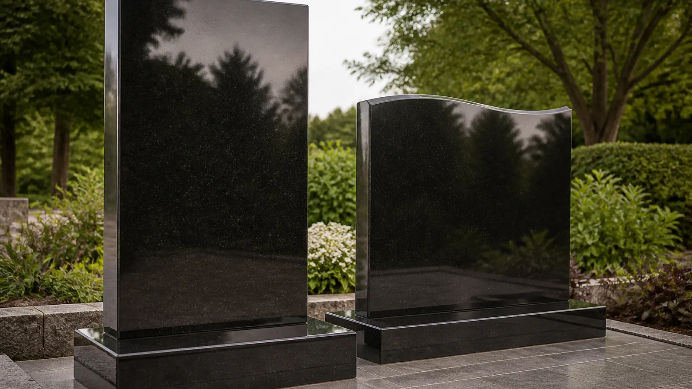
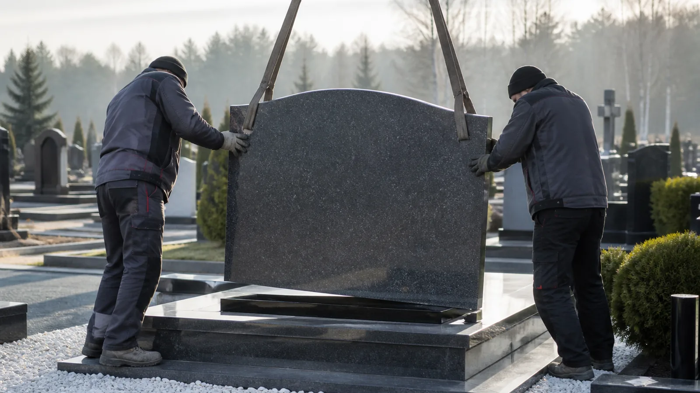

Почему семьи ищут «гранитные памятники Алматы»
Запрос «гранитные памятники Алматы» обычно означает не просто «купить услугу», а получить понятный порядок действий в тяжёлый день. В Алматы важно быстро понять: какие документы оформить, куда ехать, нужен ли зал, как подать катафалк и кто будет координатором.
AngelGranit работает как похоронное бюро и служба ритуальных услуг Алматы полного цикла. Мы помогаем с организацией похорон Алматы, ритуальным агентом на связи 24/7, катафалком, ритуальными принадлежностями и последующими памятниками Алматы.
Главный принцип — спокойствие и прозрачность. Сначала план и смета, затем исполнение. Так семья контролирует бюджет и не сталкивается с навязанными опциями.

Как AngelGranit закрывает задачу «Гранитные памятники Алматы»
После звонка агент Александр уточняет обстоятельства и предлагает сценарий: минимально необходимое на ближайшие часы и то, что можно решить позже. Для похорон Алматы это критично — ночью особенно важна ясная инструкция.
Далее согласуются дата, маршрут, транспорт и состав оформления. Если нужен катафалк Алматы — фиксируем точки подачи. Если семья выбирает гранитные памятники Алматы или мемориальные комплексы Алматы, закладываем сроки изготовления отдельно от срочной церемонии.
В день прощания держим единый тайминг: зал или дом, храм при необходимости, кладбище. После церемонии остаёмся на связи по памятнику, ограде и уходу.
Документы, логистика и сопровождение
Часть стресса в организации похорон Алматы связана с маршрутизацией между службами. Ритуальный агент Алматы помогает выстроить очередь действий и не терять время на повторные поездки.
Перевозка, катафалк Алматы и подача бригады планируются с запасом на дорожную ситуацию. Для иногородних родственников удобна удалённая координация в мессенджере.
Ритуальные принадлежности Алматы — гробы, венки, кресты, текстиль — подбираем под формат церемонии и бюджет, без давления «брать всё сразу».

Памятники и память после церемонии
Даже если сегодня фокус на ритуальных услугах Алматы, многие семьи заранее думают о памятнике. Мы объясняем, когда лучше заказывать гранитные памятники Алматы и как устроена установка.
Мемориальные комплексы Алматы собираем модульно: стела, цоколь, ограда, плитка, стол и лавка. Можно начать с памятника и продолжить благоустройство в следующий сезон.
Климат города требует внимания к фундаменту и качеству камня. Поэтому изготовление и монтаж лучше держать у одного подрядчика.
Стоимость и честная смета
Цена по направлению «гранитные памятники Алматы» зависит от состава. Ориентиры ритуальных комплексов — от 150 000 ₸. Катафалк, зал, расширенное оформление и памятники влияют на итог.
Мы даём разбивку позиций, чтобы можно было сравнить предложения. Прозрачность — часть сервиса похоронного бюро AngelGranit.
Если бюджет ограничен, помогаем выделить обязательное и перенести необязательное. Это относится и к ритуальным принадлежностям Алматы, и к граниту.

Кому подходит эта страница
Страница «Гранитные памятники Алматы» полезна, если вы сравниваете ритуальные услуги Алматы, ищете ритуального агента Алматы ночью или хотите понять, как совместить похороны и заказ памятника.
Также сюда обращаются семьи, которым нужен только катафалк Алматы, только организация похорон Алматы или только памятники Алматы без полного пакета.
Смежные темы: <a href="../ritualnye-uslugi-almaty/">Ритуальные услуги Алматы</a>, <a href="../organizaciya-pohoron-almaty/">Организация похорон в Алматы</a>, <a href="../katafalk-almaty/">Катафалк Алматы</a>, <a href="../pamyatniki-almaty/">Памятники в Алматы</a>, <a href="../memorialnye-kompleksy-almaty/">Мемориальные комплексы Алматы</a>.
Практический алгоритм на ближайшие часы
1) Позвоните +7 701 056 7667 или напишите в WhatsApp. 2) Кратко опишите район и что уже сделано. 3) Получите план и ориентир по срокам. 4) Согласуйте состав услуг и бюджет. 5) Доверьте координацию агенту Александр.
Даже один звонок по запросу «гранитные памятники Алматы» часто снимает половину неопределённости. Офис: ул. Осетинская, 5а. Режим: 24/7.
AngelGranit воспринимает себя прежде всего как службу ритуальных услуг Алматы: похороны, сопровождение, транспорт, принадлежности — и только затем как мастерскую памятников.
Дополнительно о качестве сервиса по теме «гранитные памятники Алматы»
Качество ритуальных услуг Алматы измеряется не громкими обещаниями, а тем, совпал ли тайминг, приехал ли катафалк вовремя, понятна ли смета и остался ли у семьи контакт на потом.
Мы фиксируем договорённости и предупреждаем о следующих шагах заранее. Если обстоятельства меняются — пересобираем план, а не «молча меняем цену».
Для Google и для людей важно одно и то же: сайт должен честно отвечать на интент «ритуальные услуги Алматы». Поэтому на этой странице акцент на организации похорон, агенте, транспорте и поддержке семьи, а памятники показаны как логичное продолжение сервиса.
Если вы читаете текст ночью, сохраните номер +7 701 056 7667. Ритуальный агент Алматы на связи. Похороны Алматы можно начать организовывать сразу после короткой консультации.
Нужна смежная услуга — откройте внутренние страницы сайта: организация похорон, катафалк, памятники, гранитные памятники, мемориальные комплексы, ритуальные принадлежности. Все они связаны перелинковкой и ведут к одному исполнителю — AngelGranit.

Районы Алматы и выезд агента
AngelGranit принимает заявки из всех районов города. Неважно, где вы находитесь: помощь по теме «гранитные памятники Алматы» начинается с звонка, а не с поездки в офис.
Ритуальный агент Алматы может выехать к семье, в морг или к месту прощания. Это снижает хаос в первые часы и помогает согласовать организацию похорон Алматы без лишних переездов.
Если родственники живут в другом городе, координация идёт удалённо: смета, маршрут катафалка Алматы, список ритуальных принадлежностей Алматы и сроки памятников обсуждаются в WhatsApp.
Офис на ул. Осетинская, 5а удобен для очной встречи, выбора образцов и подписания договорённостей. Но срочные ритуальные услуги Алматы мы запускаем и без предварительного визита.
Что чаще всего входит в сценарий похорон
Типичный сценарий похорон Алматы включает: фиксацию обстоятельств, согласование даты, подготовку тела при необходимости, подбор ритуальных принадлежностей, транспорт и церемонию.
Похоронное бюро Алматы AngelGranit помогает не «продать всё подряд», а собрать рабочий набор. Иногда достаточно базового комплекса; иногда семье важны расширенное оформление и отдельный зал.
Катафалк Алматы планируется под маршрут: дом или морг → храм/зал → кладбище. Междугородняя перевозка обсуждается отдельно с учётом расстояния и времени.
После прощания остаётся вопрос памяти: памятники Алматы, гранитные памятники Алматы или полноценные мемориальные комплексы Алматы. Эти работы можно отложить на удобный сезон, сохранив качество.
Как отличить понятный сервис от давления
В поиске по запросу «гранитные памятники Алматы» легко встретить обещания «всё под ключ за час». Реалистичный сервис сначала уточняет факты и только потом называет сроки.
Хорошие ритуальные услуги Алматы дают письменную или хотя бы чёткую устную смету, объясняют, что можно упростить, и оставляют семье право выбора.
AngelGranit не подменяет религиозные решения семьи. Мы помогаем с логистикой организации похорон Алматы и уважаем выбранную традицию.
Если нужна только одна позиция — катафалк, венки, ритуальные принадлежности Алматы или замер под памятник — так и оформляем. Полный пакет не обязателен.

Память, гранит и сроки после церемонии
Семьи часто спрашивают, когда заказывать памятники Алматы после похорон. Ответ зависит от грунта, сезона и того, нужен ли временный крест.
Гранитные памятники Алматы долговечны при правильном фундаменте и монтаже. Мы подсказываем формат портрета, шрифта и композиции под климат города.
Мемориальные комплексы Алматы удобны тем, кто хочет единый вид участка: стела, цоколь, ограда, покрытие. Можно двигаться этапами.
Даже обсуждая гранит, мы помним главный интент сайта: ритуальные услуги Алматы. Памятник — продолжение заботы, а не замена срочной помощи в день утраты.
Краткий итог для семьи
Если вы ищете «гранитные памятники Алматы», вам нужен понятный план, живой контакт и исполнитель, который держит тайминг. AngelGranit работает как похоронное бюро Алматы с выездом и поддержкой 24/7.
Звоните +7 701 056 7667: агент Александр поможет с организацией похорон Алматы, катафалком, ритуальными принадлежностями и последующими памятниками.
Внутренняя навигация сайта связывает все ключевые темы — от ритуального агента до мемориальных комплексов — чтобы Google и люди видели единый сервис ритуальных услуг Алматы.
Сохраните номер и адрес ул. Осетинская, 5а. В трудный момент не нужно искать заново: ритуальные услуги Алматы у AngelGranit доступны круглосуточно.
Визуальные материалы
Фотоматериалы для раздела — новые SEO-изображения сервиса AngelGranit.